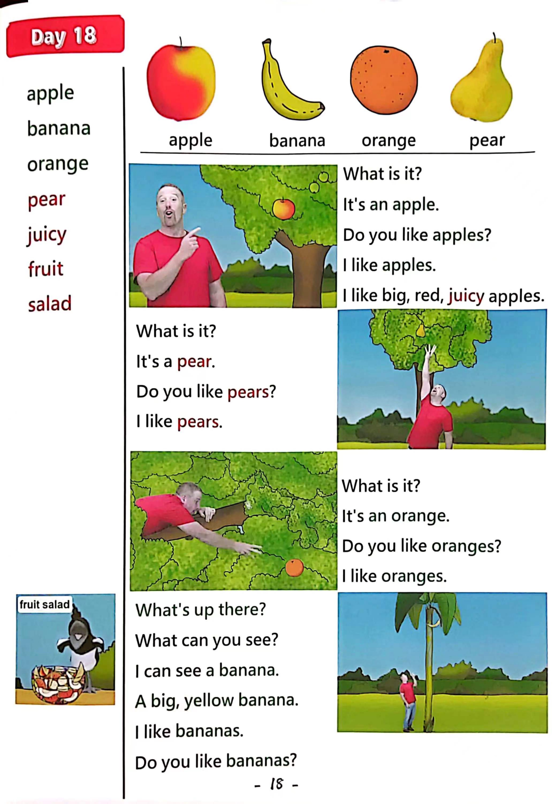

Day 18
Unit 6 · story
教材重点
教材重点依据网盘文件“第三级红色每日打卡全.pdf”，PDF 第 20 页对应 Day 18；以原图为准，避免对图片文字做不可靠的自动识别。
网盘教材重点原图 · PDF 第 20 页对应 Day 18

Unit 6 · story · 5–6岁
like · look · hello · say
Hello, hello, hello, hello, everyone. Hello. Hello.
台词本为机器转写，可能存在识别误差；不等同于视频逐字原声。
详细内容
Part 1 核心词汇
必须掌握 · 4 个Part 2 跟读句型与句型拓展
左侧保留台词本原句，右侧为替换练习；拓展内容不是视频逐字台词。
Hello, hello, hello, hello, everyone. Hello. Hello.
Everyone, hello. Hello.
Everyone say, hello. Everyone.
Apple, banana, orange and pear.
I like apples, oh, wow.
Part 3 台词本全文
来源：第3级台词本 · 018.Wow!Red - Unit 6 'fruit' - part 1 story_6_1.pdf。以下保留网盘 PDF 的机器转写文本，仅清理了文件路径页眉和空行。
Hello, hello, hello, hello, everyone. Hello. Hello.
Everyone, hello. Hello.
Everyone say, hello. Everyone.
Apple, banana, orange and pear.
I like apples, oh, wow.
Oh, hi, oh, look, what is it? Yeah, it's an.
Apple, oh, do you like apples? Yeah,
I like apples, say that with me, come on, I like apples.
I like apples again, I like apples one more time, I like apples, yeah,
Oh, I love big, red, juicy apples, delicious.
Hey,
Wait a minute, where's the apple? No, where's the apple Where's that delicious red apple?
How.
Oh, hey, look up there, oh, what is it? Yeah, it's a pair, hey, look, it's.
Ah,
Pair, it's a pair, say with me, it's.
Ah, oh dear, but hey, do you like pears Oh yeah.
I like pears, hey say with me, I like pears. I like pears.
I like pears, I like pears, I like.
Pairs, oh, where's the pair Where's the pair? Oh, hey, have you got my pen.
No, oh sorry.
Hey, what is happening today.
Oh, look, oranges, hey, come back, oh, no, now there aren't any oranges either.
Who, but look.
There's one left up in the tree. Look, look, what is it? Yeah, it's an.
Orange, oh, I like oranges. Do you like oranges? Yeah. Look.
It's too high, I can't jump. No, I have to climb.
Right Let's climb the tree.
I like oranges, I like oranges, hey, say with me.
I like oranges.
/
-
/3/018.Wow!Red - Unit 6 'fruit' - part 1 story_6_1.txt[2022/3/29
星期二
6:47:15]
I like oranges, I like.
Oranges, oh, hey, that was Maggie.
Maggie come back, you naughty, naughty bird, oh, maggie,
Maggie Magpie, she's in trouble now.
Maggie took my orange and my pear and my apples, aw, hey,
What's that? Oh, ho, look, and what's up there, oh, what can you see.
I can see a banana.
A big, yellow banana, oh, I like bananas, so I have to get there before Maggie.
Time to climb.
Oh yeah.
Oh, how I really like bananas. Oh, do you like bananas? Yeah, and say with me.
I like bananas, I like bananas, and again, I like bananas. Okay. Get there before Maggie.
Oh,
Oh,
Yeah, oh, I am here, and Maggie isn't. Oh ha, ha, look,
At my lovely, big, yellow banana.
Oh no, maggie, hey kaboo.
Whole, maggie's been at a very naughty bird. Where is she? Maggie, maggie.
Oh, hello, boys and girls, HA, do you like fruit salad? Yeah. Look.
I've made a delicious fruit salad for me and stave. HA, HA, ha,
Maggie, hey,
There you are, maggie, you took my banana, my orange.
My pear and my apple. Why were you so naughty.
I wasn't naughty.
Look, I made a delicious fruit salad for you. For me, a fruit salad.
Oh thank you. Maggie.
It looks delicious. Hey, bye bye, boys and girls, see you next time, bye bye. Thanks. Maggie.